|
HERCULANO
Herculano era un elegante balneario en la Bahía de Nápoles, donde muchas
familias importantes de Roma descansaban y se recuperaban durante el
verano.
Los fornicis
Son los edificios que servían como almacenes portuarios y
de las embarcaciones. Dan a la playa y se construyeron en las estructuras
donde descansa la terraza. En las excavaciones de 1980 se descubrieron
cerca de 300 esqueletos humanos. Al esconderse de la erupción, las
elevadas temperaturas de la nube los mató. También aparecieron joyas y
monedas. En esta misma zona se halló una embarcación de 9m, bien
conservada y el esqueleto del llamado Remero y el del Soldado, con
cinturón, dos espadas, escalpelos y una bolsa con monedas.
La Terraza de M. Nonio Balbo Delante de las termas suburbanas se halla la plaza rectangular, donde se alza el altar funerario de M. Nonio Balbo. Rehabilitó y construyó numerosos edificios de la ciudad. A su muerte le tributaron grandes honores.
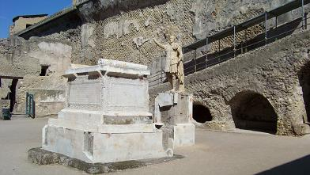
Las
Termas Suburbanas
El
Área Sagrada
La Casa de la Stoffa Posiblemente se tratara de una vivienda o taller de artesanos, posiblemente fabricantes de telas o comerciantes de telas. En la sencilla habitación de la entrada, que servía de tienda, había una estufa, una docena de ánforas y un gran mortero. Es una casa pequeña, en dos niveles conectados por dos escaleras, una directamente a la calle y la otra dentro de la que se suponía ser una tienda.
La Casa del
Bajorrelieve de Telefo
La Casa de los Ciervos La casa pertenecía a Granius Verus. Datada en época de Claudio. Esta decorada con pinturas del cuarto estilo. Su nombre viene del hallazgo de unas estatuas de unos ciervos a los que persigue una jauría. Casa con pequeño atrio sin impluvium, con balcón corrido. las habitaciones de la servidumbre se hallaban en la parte alta. A la derecha se accede al pasillo que conduce al triclinio, a una alcoba y a la cocina. A la izquierda se hallan las amplias habitaciones. Criptopórtico con ventanas, mosaicos blancos y paredes con frescos; delimita con el gran jardín donde se hallaron las mesas y estatuas de mármol que dan nombre a la casa. Dispone de una terraza con vistas al mar con una pérgola. Una de las casas más grandes de Herculano con 1100 m2.
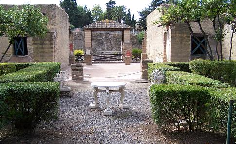
La taberna de Príapo Es uno de los numerosos thermopolium. La pintura de príapo esta detrás del mostrador y se utilizaba para alejar el mal de ojo. En una de sus dolia se descubrieron unas nueces y la trastienda que hacia las veces de almacén. De la taberna se accedía a la casa en la parte alta.
La gran Taberna Thermopolium que posee un gran mostrador en cuyo interior estaban las dolia, en las estanterías de tipo escalerilla se hallaban las jarras para servir las bebidas. Destaca el graffiti hallado en una habitación trasera, en griego que dice: “Diógenes, el cínico, al ver a una mujer a la que arrastraba el río, exclamó: "Deja que una desgracia se lleve a otra desgracia”.
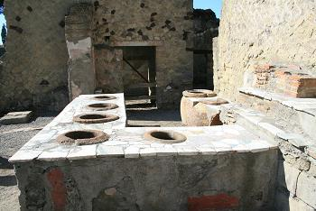
La tienda de las Ánforas La taberna vasaria, en el decumano inferior, consta de una entreplanta, destinada a la vivienda. No tenía mostrador, en las paredes laterales disponía de estanterías y al fondo una letrina. Se hallaron numerosas ánforas de vino con sello negro y caracteres griegos. Se cree que era una tienda de ánforas.
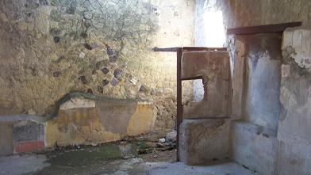
El Gimnasio Es un complejo muy grande construido en época augustal. Consta de dos terrazas. Con pórtico y criptopórtico. El estaque central fue remplazado por una fuente de bronce que representaba a la Hidra de Lerna, serpiente de siete cabezas. Al lado oeste del pórtico se hallan una serie de habitaciones, entre las que destaca la habitación absidada de unos diez metro de altura con una hornacina del mármol destinada a las celebraciones religiosas.
La casa con Jardín Es una vivienda pobre y sin adornos, pero con un jardín muy extenso. Restaurada después del terremoto. Está decorada con pinturas del segundo estilo y en ella se realizaron actividades productivas. Desde la casa se accede al taller que posee un pequeño larario.
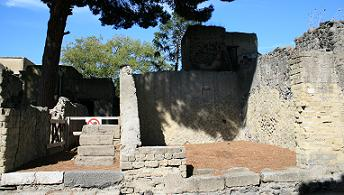
La casa del Gran Portal Llamada si por el portal de semicolumnas de su entrada coronadas por capiteles corintios esculpidos con victorias aladas.
La Panadería de Sex. Patulcus Felix En esta zona, el tramo septentrional del cardo V, se hallan las únicas dos panaderías. El pistor, panadero. Es la panificadora más importante de Herculano. En Herculano se hallaron gran cantidad de molinos pequeños y se cree que cada casa molía su harina. El horno poseía dos falos para evitar el mal de ojo. También se hallaron veinticinco moldes redondos de bronce utilizados para hornear las placentae, tortas de aceite saladas. Dispone de dos ruedas de molino, que seguramente eran movidas por un asno, por los huesos que se encontraron en el suelo.
La Casa Columna Laterizia
La
casa del Atrio Corintio
El Taller de Plomero El taller de plumbarius, plomero o soldador, posee un largo mostrador de bloque de caliza reciclados. En el se aprecia el crisol donde fundía los metales y algunas vasija de terracota donde se enfriaban. Se hallaron lingotes de plomo y tuberías, un candelabro de bronce y una estatua de Baco, con adornos de oro, plata y cobre, que estaba reparando. También se ha conservado parte del entrepiso de madera.
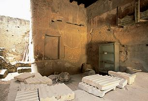
La
casa del Salón Negro
Fotos Nuevas
La tienda de la Jarras En el pilar de entrada está pintado un rotulo con cuatro jarras, cucumae, también indica que se vendía y el precio del vino. Arriba se halla la inscripción a Sancum divinidad asociada con los negocios. Abajo está escrita la palabra "NOLA", el anuncio de un espectáculo. Se cree que este establecimiento seria una caupona u hostería.
La Tienda Es una de las más interesantes, conserva el altillo y el entrepiso superior al que se accede a través de una escalera, en la que se aprecia la viga carbonizada.
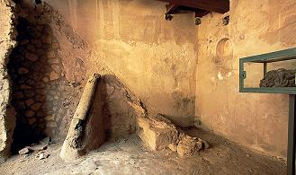
La
casa de la Columnata Toscana
Los Thermopolium Los Thermopolia solían tener uno o varios mostradores con las dolia embutidas en el mostrador. Solían estar decorados y en algunos la gente se podía sentar a comer y beber.
El Sacelio Pequeño templo rectangular con podio en la pared el fondo. Posiblemente guarde relación con el edificio contiguo de los sacerdotes augustales. Da al decumano máximo.
La sede de los Sacerdotes Augustales El colegio estaba consagrado al emperador Augusto. Edificio de planta cuadrangular con paredes subdivididas mediante arcos ciegos y cuatro columnas centrales. Edificio de dos plantas. Está decorado con pinturas del cuarto estilo. Destacan los frescos referidos a Hércules. El esqueleto del conserje se halló tumbado en su cama. Fue construido a cargo de los hermanos A. Lucius Proculus y A. Lucius IuLianus. Según la inscripción el día de su inauguración se ofreció un almuerzo y se invitó al senado municipal y a los sacerdotes. Para los libertos transformarse en sacerdote augustal les permitía ascender en la escala social.
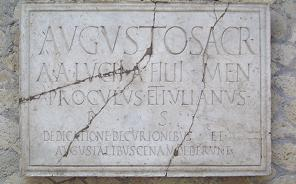
La casa de los dos Atrios Sobre la puerta destaca la máscara de terracota de Gorgona, contra el mal de ojo. El atrio de la entrada es un atrio tretástilo, mientras que el interior tiene un impluvium. Una de las ventanas de la fachada conserva la reja original. La casa tiene un diseño inusual. La vivienda estaba decorada con pinturas del cuarto estilo.
Las Termas Centrales Fueron localizadas en 1873 y excavadas en su totalidad en 1931. Típicas termas con subdivisión masculina y femenina. La sección de mujeres es más pequeña y modesta que la de hombres, pero está mejor conservada. Datan del siglo I a.e.c y eran abastecidas por un pozo. A la zona de los hombres se accede por el cardo III.
Termas femeninas
Al lado sur del complejo se halla la Palestra porticada de más de 80 x 100m, parcialmente desenterrada. En el centro hay una pila con forma de cruz de 35m de largo, que recibía el agua de una gran fuente de bronce, con una serpiente de cinco cabezas enrollada en torno a un árbol, del que brotaba el agua.
La
casa del patio Bonito
La
casa de Neptuno y Anfitrite
La tienda de Ultramarinos
La casa Samnítica Data del siglo II a.e.c. La casa originalmente ocupaba toda la parte sur de la ínsula V. Durante el transcurso del primer siglo el edificio se dividirá, el piso superior se alquila con su propia entrada en el N º 2. Su aspecto actual es fruto de las reformas posteriores. También la parte oriental fue vendida. La fachada conserva todavía la antigua entrada; en el interior hay una entrada, construida con el primer estilo almohadillado con sillares en relieve de falso mármol policromo. En el amplio atrio destaca la galería delimitada por columnas jónicas, donde están expuestos objetos de uso cotidiano, esta decorado con pinturas del cuarto estilo. En la planta baja en una de las habitaciones está representado el Rapto de Europa. La elegante decoración de la planta baja contrasta con la que se encuentra en la planta superior.
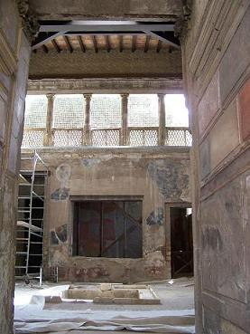
La casa de la Alcoba La casa tiene dos accesos debido a que se unieron dos casas. En una de las habitaciones se aprecia el cuadro de Ariadna abandonada. En el biclinio se conservan los lechos de madera originales y las ventanas conservan las jambas de madera y las rejas. Desde el biclinium se accede a las habitaciones. En total, hay siete habitaciones decoradas del tercer y cuarto estilo, con mosaicos y opus sectile en dos de ellos.
La casa del Atrio de Mosaico
Llamada así por la decoración del
suelo con mosaicos de motivos geométricos. Destaca por su decoración
pictórica y sus espacios arquitectónicos.
La casa de la Herma de Bronce Pequeña vivienda organizada en torno a un atrio toscano. Las paredes están decoradas con pinturas del tercer estilo, el suelo es de opus signinum. En la habitación se halla la herma de bronce del dueño de la casa. Destaca el tablino y el triclinio, cuya decoración se renovó con pinturas del cuarto estilo. Curiosamente, las dos pequeñas ventanas del atrio que dan luz a los pisos superiores son de la casa del armazón de recuadros de madera
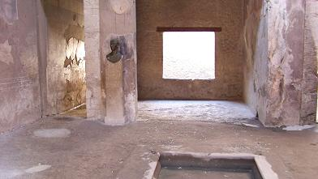
La casa del Armazón de recuadros de Madera La casa fue excavada entre 1927 y 1933. Era una casa de alquiler donde vivían varias familias, se fabricó con opus craticium, aparejo muy económico y poco seguro. El balcón que da a la calle, descansa sobre columnas de ladrillo. De esta casa proceden cuantiosos restos de madera carbonizada de camas, armarios y un retrato.
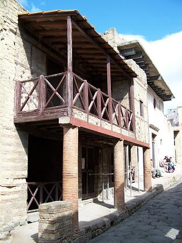
La casa del Tabique de Madera Data de época republicana. La entrada está flanqueada por dos asientos de fábrica para los clientes. Se llama así por el tabique que separa el atrio de la sala. El frente está perfectamente conservado hasta el segundo piso, con la portada, las ventanas y los respiraderos para luz, abiertos a diferentes alturas; representa uno de los ejemplos más completos de las fachadas de edificios de Herculano y Pompeya. El interior tiene un amplio atrio con frescos, flanqueado por pequeñas habitaciones. El atrio está separado del tablinum por un tabique de madera carbonizada, que tiene tres puertas. El tablinum da a un pequeño jardín, rodeado por un pequeño pórtico sobre pilastras, al que se abren las otras estancias.
La casa del Vendedor de Paños Es una de las tiendas que se construyó antes de la erupción, en las habitaciones laterales de la casa del Tabique de Madera. Era la tienda de un lanarius, vendedor de paños. En su interior se aprecia el único ejemplo de torcula o pressorium, prensa con tornillo de madera empleada para planchar la ropa. En planta alta se hallaba la vivienda.
Thermopolium Thermopolia localizada en el Cardo III, junto a la casa del Genio. Los thermopolia eran unos establecimientos, donde se vendían bebidas y comida calientes, lo cual explica su nombre griego. La gente solía consumir el prandium (almuerzo) fuera del hogar. La estructura típica es sencilla: un local que da a la calle, con el mostrador de obra de albañilería, decorado con placas de mármol o de terracota, donde se empotraban las dolia (cubas) que contenían la mercancía. A veces, en el interior, la gente se podía sentar y comer. En la trastienda de este thermopolium se encontraron numerosas ánforas, una de las cuales lleva pintado el nombre de un productor de Herculano: M. Livi Alcimi Herclani.
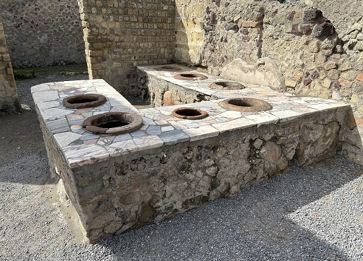
La casa del Genio Casa excavada entre 1828 y 1850, solo se puede acceder por la puerta trasera, una parte de la vivienda sigue sepultada. Se encontró una estatuilla en sus paredes, que representaba a un Genius que decoraba un candelabro en el edificio. Destaca el amplio y elegante peristilo con fuente. La entrada principal de la casa en el Cardo II, pendiente de excavación. La entrada actual de Cardo III es la entrada trasera de la casa.
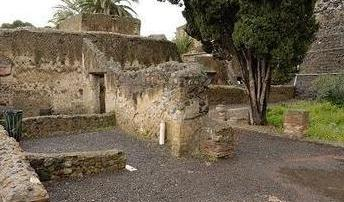
La casa de Argos Descubierta a finales de 1820. Junto a la Casa de Artistides. La entrada principal daba al cardo III, aun no escavado, se accede a través de un vano escavado en época borbónica. La pintura no conservada representaba a Argos. La planta alta se perdió, en 1875. En una de las habitaciones que daban al jardín se hallaron una despensa de panes a punto de hornear, vasijas, legumbres, aceitunas, almendras y fruta. Una de las villas más importantes de Herculano. Tenía un gran peristilo. Según la mitología griega, Argus, sirviente de Hera, fue encargado de la custodia de la ternera blanca de Zeus. La entrada a la casa en el Cardo III era una puerta secundaria, la entrada principal, no excavada, se abría a Cardo II. Los Borbones demolieron una pared medianera entre el Casa de Arístides y de Argos.
La casa de Arístides El primer edificio
a la izquierda después de llegar Cardo III es la casa de Arístides. Las
excavaciones borbónicas pasaron por esta casa para acceder a la villa de
los Papiros. Su nombre proviene de la estatua hallada, que erróneamente
atribuyeron a Arístides y no a Esquines. La entrada al edificio se abre
directamente sobre un atrio con el impluvium a la izquierda. El uso de las
habitaciones no está claro, debido a los daños causados por los túneles
excavados durante la época de los Borbones y los trabajos de restauración
del siglo XIX. La casa tenía un piso inferior, probablemente utilizado
para el almacenamiento. La investigación de los niveles de grava bajo la
casa de Arístides revela que estaban usando una parte de la playa en el
momento de la erupción como un vertedero, probablemente como resultado de
las reformas llevadas a cabo después del terremoto del 62.
La casa del Esqueleto En la excavación de 1831-33, hallaron en la parte alta un esqueleto en una habitación del segundo piso. El trazado actual une tres casas. La entrada en el cardo III, pavimentada con mosaico. En la parte posterior se halla el atrio y el tablinum. La casa central posee un atrio cubierto. A la izquierda de la pared de la entrada se halla el ninfeo con incrustaciones de piedra caliza. Por encima de la ninfeo se halla un friso compuesto por siete paneles, de los cuales sólo quedan tres. En el patio de halla el larario. Sólo se conserva la planta baja de la casa.
La casa del Albergue La casa fue excavada por primera vez en 1852. Vivienda de época augustal, de grandes dimensiones con termas decoradas y con pinturas del segundo estilo. Dispone de terraza panorámica hacia el mar. Se pensó que era un albergue. La casa tiene más de 2000 m2. Después del terremoto del 62 se reformó y se creó un establecimiento comercial, con tiendas y talleres. Ahora se cree que era una casa privada. La entrada principal está en cardo IV, que se abre al atrio, del que irradian las habitaciones. En el jardín se ha hallado el tronco carbonizado de un peral. Las habitaciones principales están decoradas con mosaicos. Posee un complejo termal. Está en mal estado de conservación.
Villa de los Papiros Se llama así por el descubrimiento de la colección de papiros, actualmente conservados en la Biblioteca Nazionale de Nápoles. Se descubrió durante las excavaciones realizadas de 1738 a 1766. La villa pertenecía a Lucio Calpurnio Pisón, suegro de Julio César. Confundieron los rollos con trozos de carbón y troncos quemados. Se hallaron más de 80 estatuas de bronce y mármol de calidad óptima. Unos 2.000 rollos han sido recuperados de la villa, de los cuales se han desenrollado entre 1.600 y 1.700. Son mayormente obras filosóficas en griego, muchas de Filodemo de Gadara, identificado como el autor de 44 rollos y probable autor de otras 120 secciones. Otras obras incluyen una comedia en latín por Cecilio Estacio, llamada "Faenerator" o "El Usurero", sobre un joven que pide dinero prestado a un alto interés para recuperar a su novia de las manos de un proxeneta.
Foro Restos de la entrada al foro de Herculano.
La casa del
Bicentenario
La casa de Galba
La casa de la Gema
Fotos nuevas: Parque Arqueológico de Herculano. En su momento daba al mar y es famosa por su suelo de mosaico. Reapertura en 2025.
Basílica La Basílica Noniana se halla en la Insula VII, frente al Cardo III, detrás del Colegio Augustal. Se accede a ella a través de los túneles de época borbónica. Fue descubierta en 1739. Se halla próxima al Teatro. Una inscripción nos dice que fue restaurada después del terremoto del 62 gracias al proconsul Marcus Nonius Balbo. Se conserva espléndidamente con sus tres naves, a excepción de los expolios de las primeras excepciones.
Teatro La construcción es totalmente época augustal y postaugustal siglo I; fue decorado en los últimos años de vida de la ciudad, en la época claudia y neroniana. Tenía un aforo de 2.500 personas. Fue descubierto por el príncipe D'Elboeuf en 1709, antes de que se iniciaran las excavaciones en 1738 por mandato de Carlos de Borbón. Desde la entrada, por una escalera de 72 peldaños, se llega a lo más alto del graderío, desde donde por las gradas se llega a la orquesta y al proscenio con grandes nichos, en cuyo extremo hay dos bases con estatuas honoríficas.
Calles, fuentes y casas
|
||||||||||||||||||||||||||||||||||||||||||||||||||||||||||||||||||||||||||||||||||||||||||||